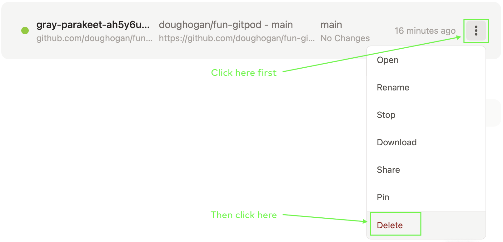
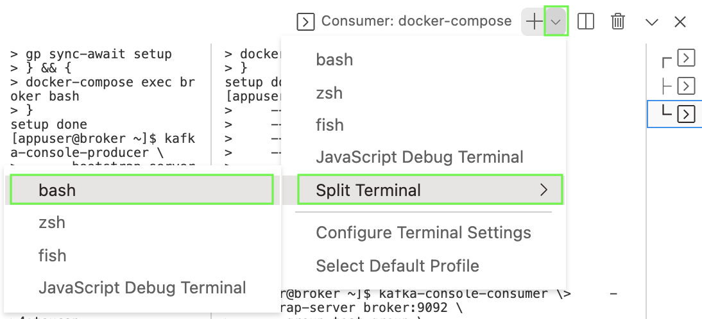

This is a hands-on activity designed to let you experience some of the concepts from Fundamentals for yourself. It runs entirely within a web browser - nothing else needed - using a tool called Gitpod.
| Expected time: Budget a half hour for this activity. Give yourself an extra half hour if you’re also interested in trying the Enrichment exercises at the end, although you could spend more time if you’re interesting in experimenting further. |
Lab Setup
To get started, click here to launch the lab environment in Gitpod.
You should see something like this:
You won’t need the side navigation pane, nor the top pane — so you may close them — and you can close the notification about "A service is…":
You’ll now see three terminals running in three panes. One is meant for setup and status information, one is meant for producing, and one is meant for consuming. You are encouraged to make the leftmost terminal pane the widest and the other two smaller, something like this:
Observe that in each terminal, you’ll see a [appuser@broker ~]$ prompt. Each is running bash, all in the same Docker container (but you don’t need to know anything about Docker; all that setup is done for you).
Set up a Topic, Producer, and Consumer
In this exercise, we’ll use a single topic and command line producer and consumer tools. Let’s get them all set up.
| If you copy commands and paste them into Gitpod, you’ll be asked to allow clipboard access the first time. This is normal. |
Follow these steps:
-
In the left Setup and Status terminal pane, run this command to create the topic
test-topicwith 3 partitions:$ kafka-topics \ --create \ --bootstrap-server broker:9092 \ --topic test-topic \ --partitions 3 -
In the middle Producing terminal pane, run this command to start your producer:
$ kafka-console-producer \ --bootstrap-server broker:9092 \ --topic test-topic \ --property parse.key=true \ --property key.separator=: -
Observe a prompt appears:
>
You’ll type your messages here - the next section will show you how - but let’s first set up our consumer.
-
In the right Consuming terminal pane, run this command to start your consumer:
$ kafka-console-consumer \ --bootstrap-server broker:9092 \ --group test-group \ --topic test-topic \ --from-beginning \ --property print.key=true -
Observe here only a flashing cursor. When you produce messages, they’ll show up here.
Experience Producing and Consuming
Now let’s produce some messages and observe our consumer as it reads them.
-
To produce a message, type a key, followed by a colon, followed by a value after the
>prompt in the Producing terminal pane. For example, to produce a message with a key of 4 and a value of owl, type:> 4:owl
You’ll then get a new prompt to keep producing:
>
-
The consumer is already running in the rightmost terminal pane. Observe that the key and value of your message are both displayed automatically. For the above example, one would get:
4 owl
-
Produce at least 4 more messages. Use at least one key twice, but use at least two different keys to get some variety. Observe that the consumer is keeping up with the producer in near real time.
-
Leave your producer and consumer running for the remaining steps.
Observe Partitions and Log End Offsets
You may recall that when we created our topic, it had 3 partitions. You may also recall hearing about offsets in logs as well as consumer offsets in the Fundamentals presentation. Let’s see a little bit about those matters.
-
When we created our console consumer, we named its consumer group as test-group. There’s a handy CLI command to learn about a consumer group; we can see the various partitions and information about offsets. Back in the Setup and Status terminal panel, run this command:
$ kafka-consumer-groups \ --bootstrap-server broker:9092 \ --describe \ --group test-groupExpected Output
You’ll get output that looks something like this:
GROUP TOPIC PARTITION CURRENT-OFFSET LOG-END-OFFSET LAG COD test-group test-topic 0 2 2 0 co1 test-group test-topic 1 5 5 0 co1 test-group test-topic 2 1 1 0 co1
-
Note that the above output resulted after 8 messages - two of which had key
4and six of which had other keys - were produced. Look at theLOG-END-OFFSETcolumn; what do you observe that makes sense? What is not clear?Solution
If you add up the values in the
LOG-END-OFFSET, you get8and there are8messages.To recap, for any given partition,
-
the first message is written to offset
0 -
the next message is written to offset
1, etc. -
the
LOG-END-OFFSETshows the offset to which the next message would be written.
So, to be precise, this output and what we’ve experienced tells us:
-
partition
0has messages at offsets0and1 -
partition
1has messages at offsets0,1,2,3, and4 -
partition
2has a message at offset0only
What this does not tell us is which specific messages (and, importantly, which keys) are written to each partition. There’s an optional exercise in the Enrichment section that explores that if you are curious.
(To be very precise, we can reach the above conclusion additionally knowing log compaction is not turned on.)
-
-
Now produce another message with key
4in the Producing pane, e.g.> 4:seagull
-
Observe this message in your right Consuming terminal pane.
-
Also rerun the
kafka-consumer-groups…command from Step 9 in the Setup and Status pane. What do you observe? To which partition did Kafka write your new message?Solution
In the running example, the output before producing a new message with key
4wasGROUP TOPIC PARTITION CURRENT-OFFSET LOG-END-OFFSET LAG COD test-group test-topic 0 1 1 0 co1 test-group test-topic 1 4 4 0 co1 test-group test-topic 2 1 1 0 co1And, after producing a new message with key
4, the output was:GROUP TOPIC PARTITION CURRENT-OFFSET LOG-END-OFFSET LAG COD test-group test-topic 0 1 1 0 co1 test-group test-topic 1 5 5 0 co1 test-group test-topic 2 1 1 0 co1We can see that the
LOG-END-OFFSETfor partition1increased by 1, and we can deduce that our new message was written to partition1.The specific partition number may vary for you, but you should observe exactly one partition’s
LOG-END-OFFSETincrementing. -
If you were to produce another message with key
4, to which partition do you think it will be written? Produce such a message, and repeat the prior step to see if you were right.Solution
Yes, if you produce several more messages with key
4, they will all go to the same partition.This holds true in this setup, but does it always?
Observe Consumer Offsets
Look back at your last output, like that in Step 9. We looked at LOG-END-OFFSET, where the next message will be written in each partition. But you’ll also see CURRENT-OFFSET reported; this is the consumer offset, where the consumer reading a partition will read next.
-
Inspect the values of
CURRENT-OFFSETin your output. Why do they make sense?Solution
For all partitions, the
CURRENT-OFFSET- or consumer offset - matches theLOG-END-OFFSET. We observed a consumer reading all of the messages that have been produced. Thus, it should make sense that the position to read the next message in each partition (the consumer offset) is the same as the position to write the next message in each partition (theLOG-END-OFFSET). -
Go back to the Consuming terminal pane and stop the
kafka-console-consumerthat is running by enteringCtrl+C.Expected Output
Observe a reaction like this:
^CProcessed a total of 8 messages [appuser@broker ~]$
-
Go back to the Setup and Status terminal pane and rerun the
kafka-consumer-groupscommand from Step 9 (you can copy the command from Step 9 or use the up arrow in the terminal) and observe the output.Expected Output
You’ll see output something like this:
Consumer group 'test-group' has no active members. GROUP TOPIC PARTITION CURRENT-OFFSET LOG-END-OFFSET LAG COD test-group test-topic 2 1 1 0 - - test-group test-topic 0 1 1 0 - - test-group test-topic 1 5 5 0 - -
Most importantly, notice that the status indicates that
Consumer group 'test-group' has no active members.This makes sense, as we stopped our consumer. But notice that Kafka still knows the offset of the consumer we stopped for each partition; we go in detail about how this works in the Confluent Developer Skills for Building Apache Kafka® and Apache Kafka® Administration by Confluent courses, but let’s explore consumer offsets just a bit further for now. -
Your producer should still be running in the middle Producing terminal pane. Produce three more messages.
-
Go back to the left Setup and Status terminal pane and run the
kafka-consumer-groupscommand from Step 9 again and observe the output.Expected Output
Your output might look something like this:
Consumer group 'test-group' has no active members. GROUP TOPIC PARTITION CURRENT-OFFSET LOG-END-OFFSET LAG COD test-group test-topic 2 1 1 0 - - test-group test-topic 0 1 2 1 - - test-group test-topic 1 5 7 2 - -
-
Inspect the
CURRENT-OFFSETandLOG-END-OFFSETcolumns in each row of your output. Why do they make sense?Solution
We have produced 3 more messages, but do not have any active consumer.
We can deduce from the second row that one of those messages was produced to partition
0. TheLOG-END-OFFSEThas increased by 1, to indicate the next message will be written at offset2. But theCURRENT-OFFSETremains at 1 because there has not been any consumption; the next message to be consumed from this partition is at offset1.We can deduce from the third row that two of the new messages were produced to partition
1, but have not yet been consumed. The new messages are at offsets5and6. -
In the right Consuming terminal pane, start your consumer again. (Copy the command from Step 3 or use the up arrow in the terminal.) Then, back in the left Setup and Status terminal pane, rerun the
kafka-consumer-groups(from Step 9, again you can just use the up arrow to get it). Continuing from the last output, you might see output like this:GROUP TOPIC PARTITION CURRENT-OFFSET LOG-END-OFFSET LAG COD test-group test-topic 0 2 2 0 co1 test-group test-topic 1 7 7 0 co1 test-group test-topic 2 1 1 0 co1
What do you observe?
Expected results
Now the
CURRRENT-OFFSETfor each consumer should be caught up with theLOG-END-OFFSET.You should observe in your Consuming terminal pane that the three new messages are displayed. (Note that even though our
kafka-console-consumercommand specifies--from-beginning, it interprets this as beginning from the known offset in this case. There’s a lot going on with consumer offsets, the details of which are out of our scope but are part of the Confluent Developer Skills for Building Apache Kafka® and the Apache Kafka® Administration by Confluent courses.)
Cleanup
This is the end of the activity. There are a few enrichment activities further down in the Enrichment section page you may wish to try, but if you want to finish now, you should:
-
Stop your producer in the middle Producing terminal pane with
Ctrl+D. -
Stop your consumer in the right Consuming terminal pane with
Ctrl+C. -
Delete the running workspace. Go to the Gitpod workspaces page and find your workspace, select the three dots, and choose Delete
Illustration
Here’s a screen shot pointing out how to find the Delete option:

Note that while you can run multiple workspaces in Gitpod, Github will limit you if you run too many at once and you may need to terminate one or more.
Enrichment - OPTIONAL
| Numbering for these optional sections is independent of the main activity. |
Explore Partitions Further
Here we’ll look at partitions more. You can consume from a single partition. To do so, add --partition followed by a partition number to the kafka-consumer-groups command. Let’s try it out.
-
Before you begin, stop your running consumer in the right Consuming terminal pane with
Ctrl+C.Alternatively, you can open another terminal pane…
To do so:
First, look to the right of the toolbar and click on the down arrow to the right of the
+:Then select Split Terminal >, followed by bash:
Finally, run this command (automated in the lab setup for the other terminal panes) in the new terminal pane:
$ docker-compose exec broker bash
-
View what’s on partition
0with this command:$ kafka-console-consumer \ --bootstrap-server broker:9092 \ --topic test-topic \ --from-beginning \ --property print.key=true \ --partition 0You might want to try this for partitions
1and2as well. (You might need to in the case that none of your messages was written to partition0.) Remember that you useCtrl+Cto terminate a console consumer. -
Inspect your output and write down one key and partition number.
-
Try producing another message with the same key and consuming from the same partition as in the last step. Does the new message go to the same partition? Try this with a few messages.
Solution
Yes, indeed. If you keep producing more messages with the same key in this setup, they will go to the same partition. I observed a message with key
5on partition0, and then produced two more messages with key5, both of which were indeed consumed by the consumer specifically set to read from partition0. -
Now let’s increase the number of partitions for our topic. In the left Setup and Status terminal panel, run this command to add two more partitions:
$ kafka-topics \ --bootstrap-server broker:9092 \ --alter \ --topic test-topic \ --partitions 5 -
Produce another message with the same key as in Step 3.
-
Then observe your running
kafka-console-consumerfor the same partition as in Step 3. Did your new message go to the same partition as before? If not, where did it go?Solution
It is possible your new message went to the same partition as before, but if that happened, try again with a different key.
In the running example,
-
Messages with keys
5and11were observed on partition0before increasing the number of partitions -
After increasing the number of partitions and producing a new message with key
5, the new message was observed on partition0as well. -
However, after producing a new message with key
11, the partition0consumer did not consume the message with key11. -
Running the consumer on partition
3revealed that this new key-11message was written to partition3.
Note that in this example, messages with key
11produced before the change in number of partitions were written to partition0and messages produced after the change in number of partitions were written to partition3. This follows from the default partitioning strategy presented in the Fundamentals slides.What if you want to partition differently? What if having these key
11messages on different partitions is problematic for your use cases? We discuss these matters in the Confluent Developer Skills for Building Apache Kafka® course. What about managing and changing the number of partitions? We discuss more about that in the Apache Kafka® Administration by Confluent course. -
Interpret Consumption Status
Look to your output or the sample output from Step 19. Look at the LAG column. What do you think this means?
Solution
This is the consumer lag; each entry tells how many messages have been written to the current partition but have not yet been consumed.
We can measure consumer lag not only at the partition level, but also at the consumer and topic level. Because many Kafka use cases involve processing data in real time, consumer lag is an important metric we want to monitor. We go into this in great detail and have exercises on it in our Administration track courses.
Observe Brokers
We’ve looked at partitions and messages so far, but recall from the Fundamentals presentation that partitions live on brokers. So, how can we see what the brokers are in this case?
-
Run the
kafka-topicscommand with the--describeflag to get some insight:$ kafka-topics \ --bootstrap-server broker:9092 \ --describe \ --topic test-topic -
Observe the output, particularly the
Leaderattribute in each row:Topic: test-topic PartitionCount: 3 ReplicationFactor: 1 Configs: Topic: test-topic Partition: 0 Leader: 1 Replicas: 1 Isr: 1 Topic: test-topic Partition: 1 Leader: 1 Replicas: 1 Isr: 1 Topic: test-topic Partition: 2 Leader: 1 Replicas: 1 Isr: 1In all such cases, the
Leaderis reported as1. This is the broker ID of the broker that contains the partition for the row. In the lab setup that was done automatically for you, there was only one broker and its ID is1, so this makes sense.More precisely, recall the concept of replication that came up in the Fundamentals presentation briefly. The
Leaderin the output shows the broker containing the main replica of the partition for each row.More
The lab setup did not activate replication, or, more accurately, left replication factor at
1, as you can observe in the first row of the output. In each partition’s row, you’ll seeReplicas, which tells the broker IDs where all copies of the partition are, including the leader. TheIsrwill report an important subset of those replicas. We go into great detail on replication, from different perspectives, in the Confluent Developer Skills for Building Apache Kafka® and the Apache Kafka® Administration by Confluent courses.
Further Enrichment
We’ve worked with the following commands in this lab:
-
kafka-topics -
kafka-consumer-groups -
kafka-console-producer -
kafka-console-consumer
You might explore by playing with these commands further, reading some of their documentation (good link?), and doing more producing and consuming to see what happens.
We are only scratching the surface here. Take either the Confluent Developer Skills for Building Apache Kafka® course and/or the Apache Kafka® Administration by Confluent course to learn about producers, consumers, groups, partitions, offsets, and more in much more detail!